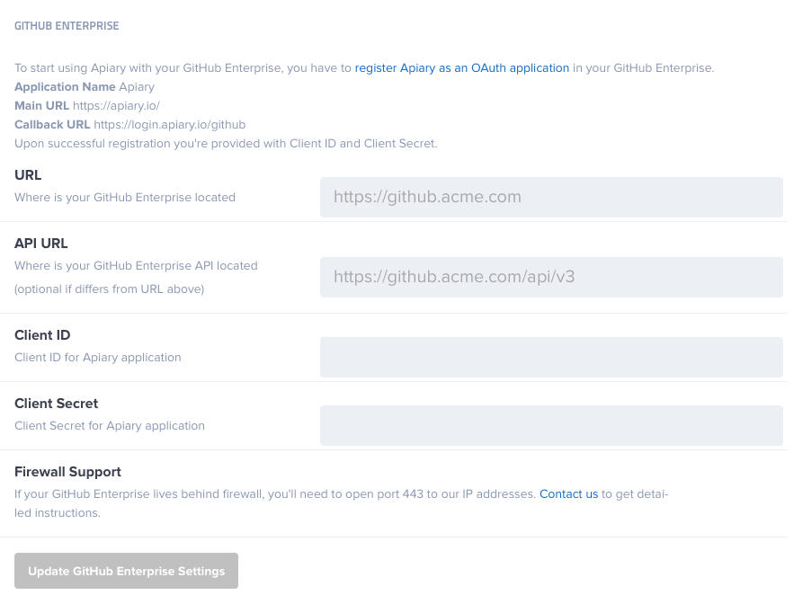

GitHub Enterprise (GHE) Integration
The GitHub Enterprise Integration is part of Apiary Pro for GitHub Enterprise users.
Connecting Apiary to a GitHub Enterprise Organization
- Sign into your GitHub Enterprise account at http[s]://[hostname]/login.
- In the upper right corner of any page, click the account settings (gear) icon.
- In the left sidebar, click the name of your organization.
- In the left sidebar, click Applications.
- In the upper right corner of the Organization applications box, click Register new application.
- Fill in the application settings:
- In the Application name field, type “Apiary”.
- In the Homepage URL field, type the full URL “https://apiary.io”.
- In the Authorization callback URL field, type the full URL “https://login.apiary.io/github”.
- Click Register application.
- At the top of the page, note the Client ID and Client Secret. You will need these for configuring your Apiary Team Settings.
- Go to Apiary.
- In the upper right corner click at portrait and switch to your organization.
- In top toolbar, click at Settings.
- Fill in settings:
- In the URL name field, type your GHE “[URL]”
- In the API URL name field, type your GHE “[API_URL]” (
URL/api/v3for standard GHE installation). If not setURLabove will be used asAPI URL - In the Client Id, type your Client ID
- In the Client Secret, type your Client Secret

GitHub SSO
Signing in by GitHub SSO is disabled when GitHub Enterprise Integration is enabled.
Was this page useful?
Thank you for the feedback!
What went wrong?